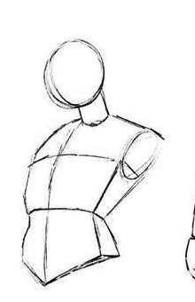
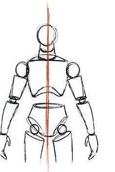
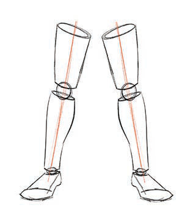

Kielelezo namba 8: Matumizi ya umbo la mraba na mche duara katika kuchora kifua cha binadamu

Kazi ya kufanya namba 6
Tumia umbo la mraba na mche duara kuchora kifua cha binadamu.
Uchoraji wa miguu ya binadamu
Chora maumbo mawili ya mche duara yaliyounganishwa na duara kupata umbo la mguu mmoja mzima. Rudia tena hatua hiyo kwa kuchora umbo la mguu wa pili. Kielelezo namba 9 kinaonesha mwongozo wa kutumia umbo la mche duara katika kuchora miguu.

Kielelezo namba 9: Matumizi ya umbo la mche duara katika kuchora miguu